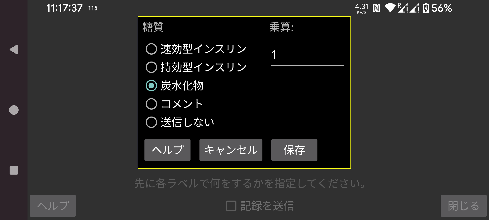

Libreview と同様に、Juggluco の Nightscout サーバー経由で記録をどのように表現するかも指定できます。
Juggluco で特定のラベルで入力された記録を、Libreview にどのように送信するかを選択します。同じ Libreview ラベルで複数の種類の記録を送信することもできます。例えば、Juggluco で炭水化物と純粋なブドウ糖食品を別々のラベルで記録している場合、両方を Libreview に 炭水化物 として送信するように指定できます。
炭水化物については、Juggluco で入力された値に特定の数値を 掛ける ことができ、他の単位をグラムに変換できます。Juggluco で 10 グラムを 1 単位として数えている場合、ここに 10 を入力すると、グラム単位で Libreview に送信されます。
コメント は、Librelink でコメントを追加した場合と同じ形式で記録を Libreview に送信することを意味します。コメントを指定すると、ラベルとそのラベルで入力された数値が送信されます。例えば「自転車」というラベルがあり、そのラベルで「50」と入力した場合、「自転車 50」のように送信されます。「自転車 50」は Libreview の「Daily log」のグラフの下に指定時刻に表示されます。